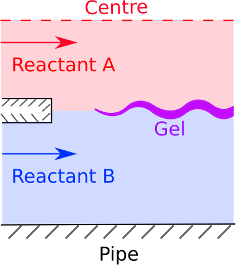
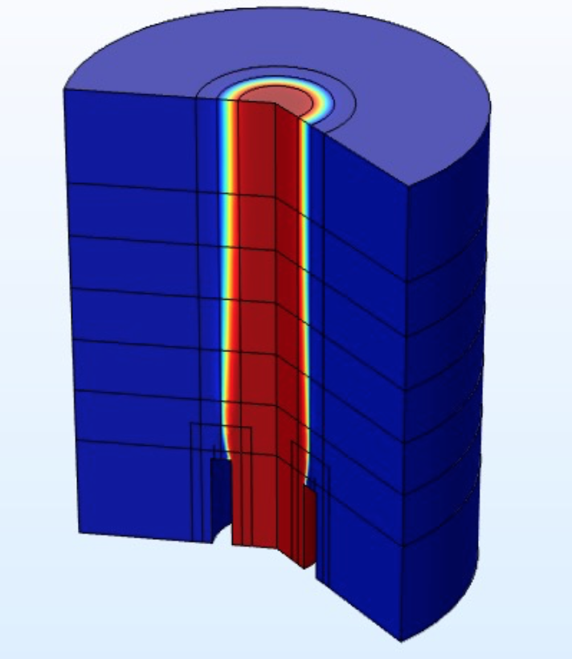

Schlumberger was interested in investigating a process for manufacturing small, hollow gel-sleeves (see fig. 1). Through this process, gel "sleeves" are made by injecting a solution containing one of the reactancts (say reactant A) into the center of a flowing solution containing another reactant (say reactant B). The resulting flow environment is a coaxial flow, where an annular flow encloses an axisymmetric flow (see fig. 2). The diffusion of reactants across the interface allows a gelation reaction to take place, resulting in an evolving gel-layer between the co-flowing fluids.
We modelled this system to better understand how the apparatus set-up controls the final properties of the gel-sleeves. By considering a number of interesting limits we were able to obtain good, leading-order predictions for some useful properties of the gel (e.g. the gel-sleeve diameter, and the rate of gel-mass increase along the axis of flow).

A schematic of a device for manufacturing hollow gel-sleeves. In this case, a solution of reactant A (red) is injected into a solution of reactant B (blue). A reaction takes place where the solutions meet, producing a gel (purple).

Results of a similation performed using COMSOL illustrating the annular flow of a solution of reactant b (blue) enclosing an evolving hollow gel-sleeve (transition) and an axisymmetric solution of reactant A (red)
Publication here